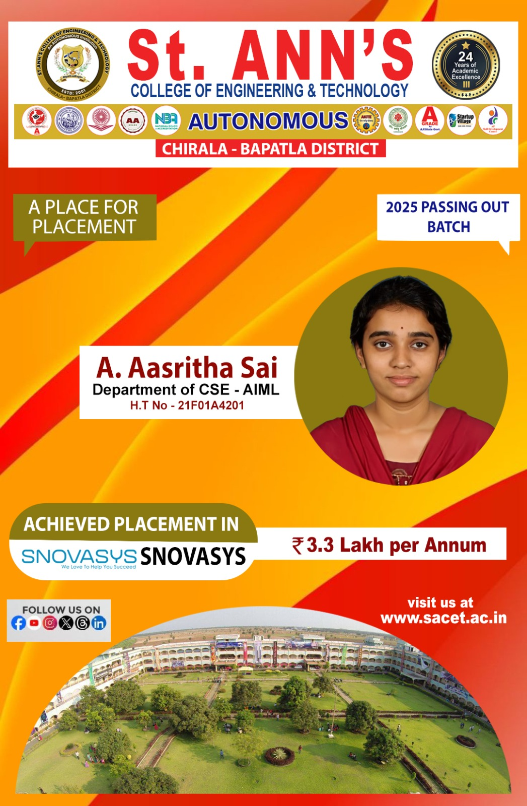
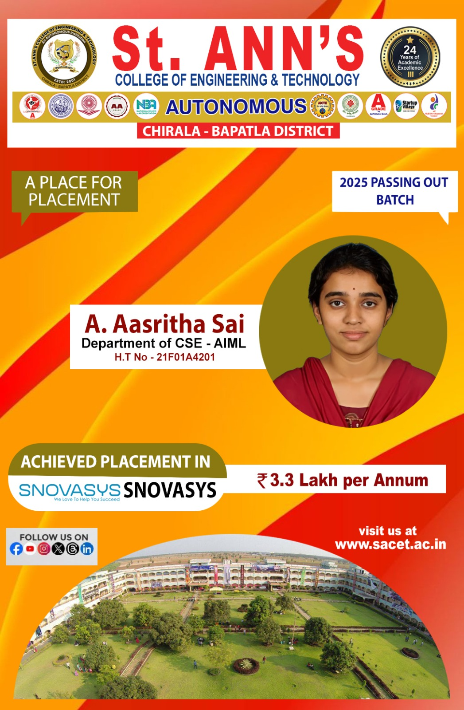
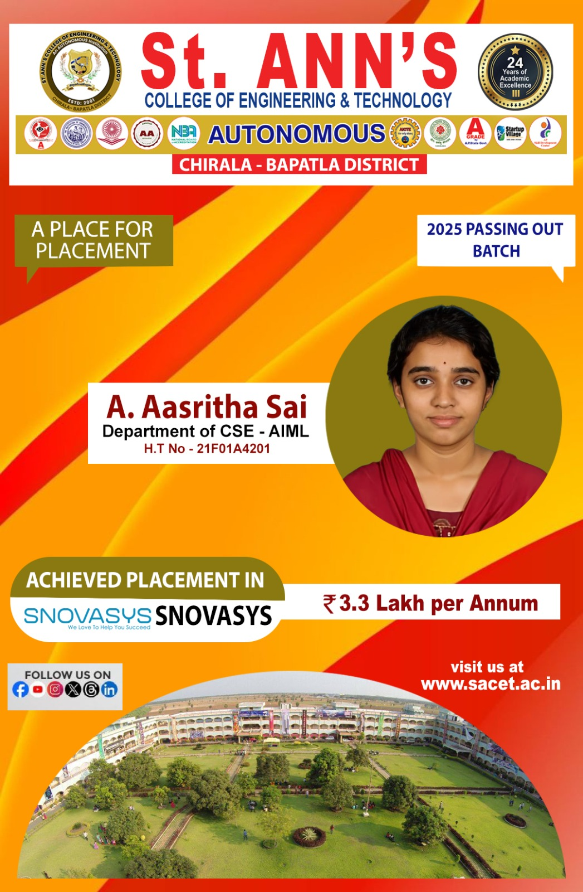

2021-25 Batch - Total 25 Students Selected for Tech Mahindra
St. Ann’s has signed MoUs with various MNCs like Infosys, IBM, Wipro, etc. We are conducting various Academic Initiative Programs with Infosys Campus Connect, Wipro Mission 10X, IBM Center for Excellence, and The Great Mind Challenge. Regular interactions with other institutions & industries are conducted to stay updated on employment opportunities in multinational companies like Infosys, IBM, Wipro, TCS, Cognizant, Mahindra-Satyam, ICICI, Reliance, Oracle, and more. The Placement Cell has built up a strong industry-institute interface.
Full-fledged placement activities are conducted at SACET, with a centralized Placement Cell exclusively interacting with industries, headed by a full-time Placement Officer. Training and workshops are conducted throughout the academic year to enhance students' communication skills and employability.
2021-25 Batch - 2 Students Selected for Kalvium with 5.5 Lakh Per Annum
The Placement Cell regularly trains students weak in communication and helps them gain practical experience through industry internships. We interact with reputed organizations for campus interviews and higher studies counseling.
2021-25 Batch - 3 Students Selected for Snovaysis with 3.5 Lakh Per Annum

Industrial visits are arranged for students to learn more about the activities of reputed companies. Regular soft-skill training programs are conducted to improve student capabilities. The department also guides students towards higher studies and industry projects.
 
